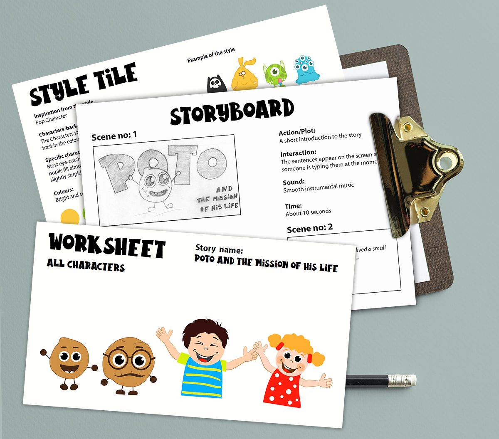

"Poto and the mission of his life"
The assignment
To tell a story by my choice through Storyboard, Style Tile and Worksheet. I had to end the story with a Sprite Sheet Animation.
For this project I was inspired from the style Pop Character. What is typical of the style is that all the characters have eye-catching eyes. They are always large and the pupils fill almost the entire eye. The characters look good in character and even slightly stupid. Each character have a totally different identity. Colors are bright and contrasting.
The font that I chose for my story is Rabbito, which is a very nice, cartoon looking and playful and I think it matches excellent to the type of the story, which is quite childish and a bit naive.
In this particular assignment we had to show what we learned about sprite animation, to create a one with one of our story characters and here is the result of my work:

A brief description of the working process
This project comprises hand drawn sketches as a first stage of the whole process of creating an animation, vector images of our main characters, made in Illustrator and explanation of the whole idea, how the animation should be created.
Illustrator is preferred to be used in this case, because for the purposes of sprite animation we need to move different parts of the character's body for instance. This software provides very easy and quick movement of every single element, changing color and so on. Last but not least vector images are scalable without a loss of quality even in very large images.
For better analysing of my story I used "The Whale curve" which is a type of narrative curve and consist of 6 different stages: Prelude, Presentation, Point of no return, Rising action, Climax and Fade out.
My storyboard is based mainly on sound, movement and time dramaturgical elements.
The challenge in this project was to visualize and define the main scenes of the story and how the dramaturgical elements will change from scene to scene, how the drawn characters match the chosen style and how to describe the story so that it is comprehensible and provoke the reader to imagine all the little details I imagine. I hope I have succeeded.
The final sprite animation was created with HTML and CSS keyframes